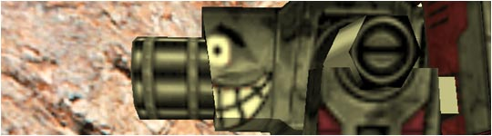
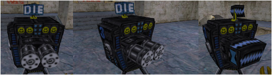

|
||||||||||||||||||||||||||||||||||||


| Spy in a Suit - Download |
| I came up with another idea for a model. This one was based off the original tf spy, where he was in a suit. I think it turned out way better than I was expecting it to. I hope you like it. |
| Quake2 Rocket Launcher Conversion - Download |
| I finally formatted my comp so I could use milkshape again. I really liked the original quake2 rocket launcher, for, well, quake2, and so I decided to do a conversion of it. I think it looks pretty slick with the team colors and stuff. I just kept the default tfc rocket launcher animations, but that will change when I get unlazy. I hope to change the animations to somewhat near the original, but we will see. |
| Sumo's Bling Bling Grenades - Download |
| Someone figured out how to reskin grenades, so of course I wanted to put a sumo on them. I decided to bling out my tfc, so I made these. |
| Sumo Backpacks - Download |
| I don't know why I did this, but I did. I actually don't use them, cause I like my UFO backpacks more. But anyway, if you want them, here ya go. |
| My Face On The Scout - Download |
| Well, I got bored one day, and I had a picture of me looking mad, so I stuck it on the scout. I think it's a pretty good job, and it makes the scout look more comical. :) Oh ya, this scout has the golden shoes, so if you don't like them, tough luck. :P |
| LLoyd's Face On The Spy - Download |
| I liked my face so much on the scout, that I decided to put my good buddy Lloyd on the spy. Since he is an awesome spy, I think he deserves it, and it turned out awesome anyway. |
| Blue Posing Models - Download |
| I made these for people who make sigs and things with playermodels in them. Usually you have to settle for a model with an orange skin, so I made these that had a blue skin. I will work on the red models in a bit, but I have these done, so I thought I should put them up. |
| Nails With Sparks - Download |
| I really wanted to know how the nails with the muzzleflashes on the back worked, so I did a little research. I found out that you can attach sprites to points on a model, but you can attach more than just sprites. I edited the muzzleflash nail and replaced the muzzleflash with sparks instead. I like the results. |
| Nails With Muzzleflash - Download |
| This is the original nail with the muzzleflash attached to it. I don't know who made it, but I wasn't the person that did. It's still cool though, so I put it up here. |
| Nailgun With Sparks - Download |
| After messing around with changing stuff in the models I decided to make a nailgun that had sparks instead of the muzzleflash. I didn't really like it all that much, and I don't use it now, but someone might think it's cool so I put it up here. |
| Civilian With Target - Download |
| This was my first attempt at reskinning something, and I think it came out very well. It's only the original civilian with a target on his back and belly. I did it because I play the map hunted a lot and thought other people might find it funny. |
| UFO Backpacks - Download |
| Well, I toiled away late into the night to bring you this UFO backpack. I'm pretty happy, since it's my first model. Hope ya like it. It's fun to throw UFOs when you discard. :) (Green glow not included) |
| Happy Level 1 SG - Download |
| Since I reskinned the level 2 sg, I decided to do the level 1 sg also. |
| Happy Level 2 SG - Download |
|  |
| I got bored so I reskinned the level2 sg. It is now a happy sentry! |
| Happy Level 3 SG - Download |
|  |
| I had the level 1 and 2 sgs done, why not level 3? |
| Sparking Gibs - Download |
| Ooppee had made flaming gibs, so I decided to copy his idea but put sparks on them instead. I actually don't use them because it drops my FPS a lot. They look cool when they fly in the air though. |
| Green RPG - Download |
 |
| Well, I liked how the purple RPG turned out a lot, so I figured I could try another color. This time I chose green. I actually don't like how it turned out all that much, but I figured someone else might, so I stuck it up. |
| Purple RPG - Download |
| There is a website run by SexKitten which is a TFC site females who play. I offered my services because I thought it was a good cause. One of the members asked for a purple RPG and a purple conc grenade. I made them both, but the conc got the consistency error. So here is the RPG in all it's purple glory. |
| Purple Knife - Download |
| Same thing as the RPG. She asked for a RPG, knife, super shotgun, and conc. This is the knife. |
| Purple Super Shotgun - Download |
| Same thing as the RPG. She asked for a RPG, knife, super shotgun, and conc. This is the super shotgun. |